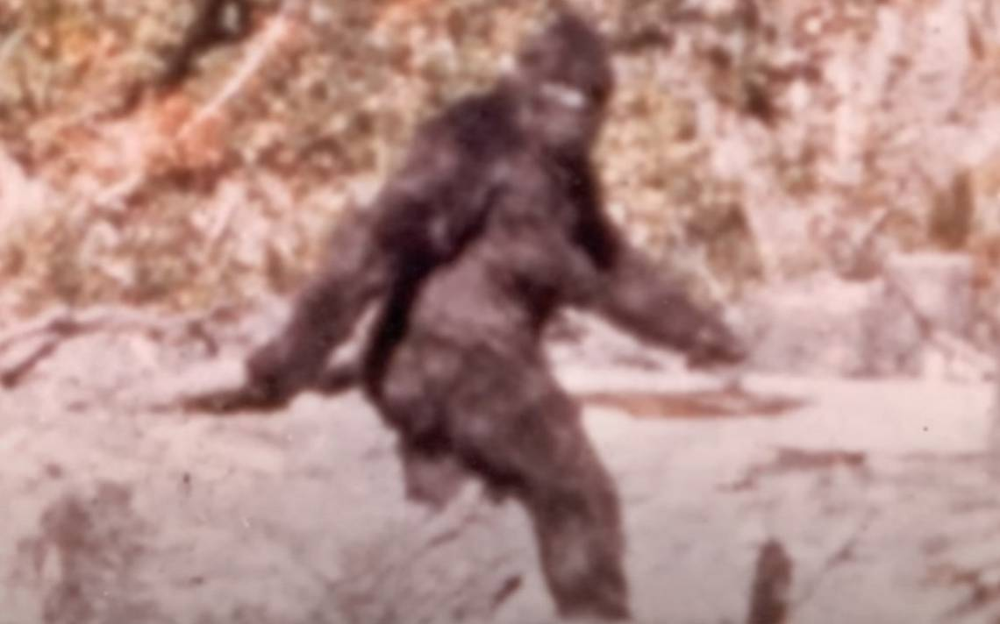
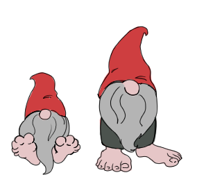
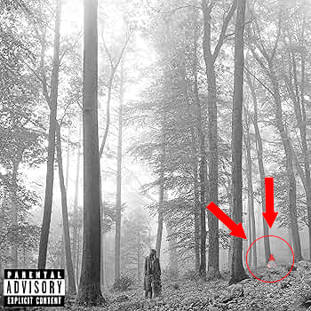
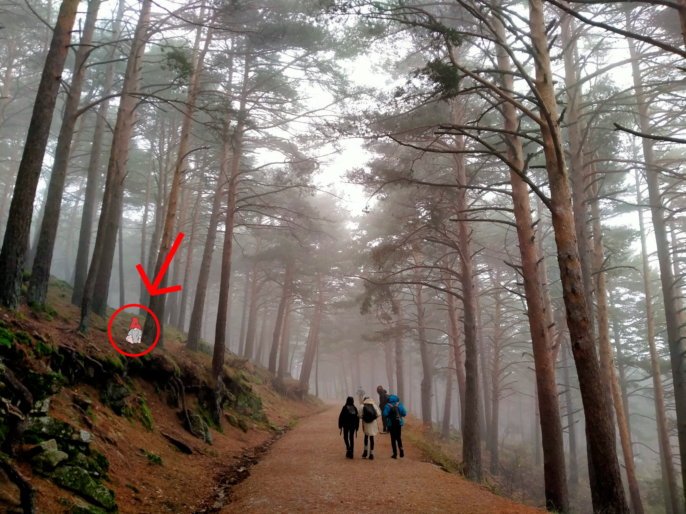

La verdad sobre Piegrande y los bosques madrileños
Siempre se ha hablado del Piegrande estadounidense, aquella figura que parece medio hombre medio mono. Pero, bien es sabido que esto es falso, no hay pruebas verdaderas de que esto exista, solo fotos borrosas que podrían ser cualquier cosa; lo más parecido que tenemos son estas imagenes de un gorila.
Pero, en años recientes, excursionistas madrileños han avistado huellas de un tamaño considerable en caminos boscosos. Y varios afirman haber encontrado su procedencia. Hemos conseguido reproducciones hiperrealistas de como son:
Estos seres con aspecto de gnomo, se han podido fotografiar en varias ocasiones, sobre todo en la sierra de Madrid. Sus grandes pies nos indican que, a diferencia de otras razas gnomicas que viven en praderas, estos se ha acostumbrado a andar entre roca y tierra.
Estos pequeños seres se han conseguido infiltrar sin ser vistos en nuestra cultura popular, como se puede ver en el disco Folklore de Taylor Swift. El disco fue especificamente fotografiado en la sierra de Madrid por petición de la cantante, ávida seguidora de nuestro blog, queriendo encontrar una de estas criaturas.
Aquí os dejamos un par de avistamientos que conseguimos realizar este fin de semana, en alta calidad.

Si te interesan más avistamientos o las verdades de otros seres mitológicos, te recomendamos leer nuestro artículo sobre el Chupacabras es gallego, donde exploramos otro de los secretos más grandes de nuestro tiempo.
Si cree haber presenciado un encuentro con estee tipo de gnommo contactenos de inmediato, aun no se sabe si son peligrosos.
640605804